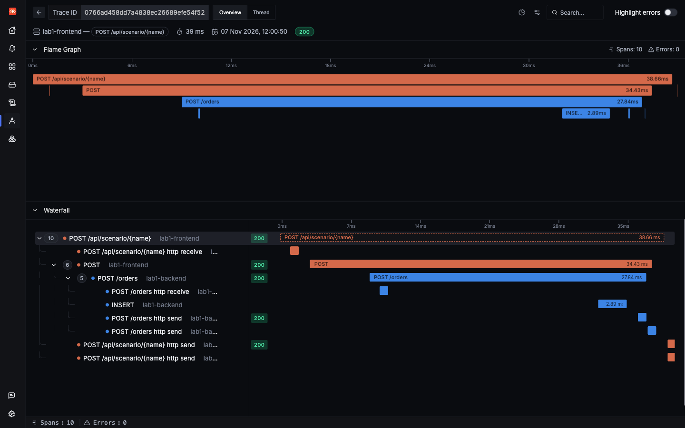

Lab 1: hands-off
Traces, metrics and logs
Three kinds of telemetry answer three different questions. This page follows one real order through all of them.
| Signal | Question it answers | Example in this app |
|---|---|---|
| Trace | What happened to this one request, and where did the time go? | One order, as spans across lab1-frontend, lab1-backend and Postgres |
| Metric | How much, and how often, across everything? | signoz_calls_total, a running count of calls to each service |
| Log | What did the code say at that moment? | order stored, with the order ID and total |
One request, end to end
Fire an order in Lab 1. Its app knows nothing about tracing, so the response has no trace ID. This page finds the trace by searching SigNoz, which takes a few seconds.
Here is a saved run of the same scenario:
Reading a trace
A trace is one request. A span is one timed step in it. Each span records its parent, which is how the tree is built. This order has four useful spans, and the agent created all of them:
| Span | Service | Kind | What it measures |
|---|---|---|---|
POST /api/scenario/{name} | lab1-frontend | Server | The whole request, as the frontend saw it |
POST | lab1-frontend | Client | The frontend's call to the backend |
POST /orders | lab1-backend | Server | The same call from the backend's side, joining the same trace |
INSERT | lab1-backend | Client | The SQL statement sent to Postgres |
Kind tells you the span's role: Server handles an incoming request, Client makes an outgoing call, and Internal is work inside a process. Each span also has attributes (key-value details such as db.statement) and a status (Unset or Error).

http send and http receive spans, covered in gap 6.Logs: the same request, in words
The saved run above lists two logs with the same trace ID: order stored from lab1-backend, and an HTTP Request line from lab1-frontend. Nobody wrote that second one. It comes from the httpx library's own logger, which reaches SigNoz because the log bridge sits on Python's root logger.
Look at the first one again. The app passes order.item and order.total to Python's logging with extra=, and those become attributes you can search. That is ordinary logging, not OpenTelemetry code. You will see why it matters in Lab 2.
In a trace you see that a step took 25 ms. In a log, you see what the code decided to say about it.
Metrics: numbers with no trace ID
A metric is a number that keeps being updated and sent on a schedule. It is cheap and good for trends and alerts, but it cannot tell you about one request. So metrics have no trace ID.
That one comes from SigNoz's collector, which derives signoz_calls_total and signoz_latency from spans, so you get call rates and latency without any metric code in the app.
How the signals connect
| Link | How it works here |
|---|---|
| Trace to logs | An exact link. A log written during a request carries its trace_id and span_id. |
| Metric to trace | No direct link. You match by service.name, attributes and time. |
| Everything to a service | service.name is on all three signals. In Lab 1 the Operator sets it from the Deployment's name. |
| Spans to metrics | SigNoz generates signoz_* metrics from spans in its collector. |
A useful working order: a metric tells you something is wrong, a trace shows you where, and a log tells you why. Every incident in this tutorial follows that shape.
How the data reaches SigNoz
Everything goes through the SigNoz agent on each node, and the agent adds what an app can't see for itself.
The app's traces, metrics and logs take the first path, as standard OTLP with no SigNoz code. Passing through the agent is what puts pod names on them (gap 3). The second path adds things like pod CPU. It also reads the same log lines from stdout, so app logs get stored twice (gap 4).
Try it yourself
Fire these three, then search. They give you an order, a database failure and a crash to look at.
| What to look for | Where | Search |
|---|---|---|
| SQL statements, with no database code changed | Traces | service.name = 'lab1-backend' AND db.statement EXISTS |
| Failed requests | Traces | service.name = 'lab1-frontend' AND has_error = true |
| Error logs, each linked to its trace | Logs | service.name = 'lab1-backend' AND severity_text = 'ERROR' AND trace_id != '' |
Each of these ran successfully through the query API Query API only.
Open any of those traces. It runs from lab1-frontend through lab1-backend to the SQL statement, with the pod name on every span.
Check yourself: A user reports one failed checkout. Which signal do you open first to see what happened to that request?
Check yourself: What connects a log line to its trace in this app?
Check yourself: Why does signoz_calls_total have no trace ID on it?